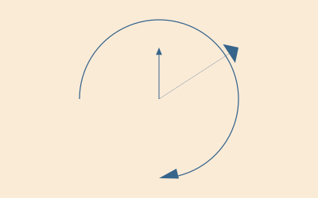

Geometry tools
Lines and distances
You can find the midpoint between two points using midpoint().
The following code places a small pentagon (using ngon()) at the midpoint of each side of a larger pentagon:
sethue("red")
ngon(O, 100, 5, 0, :stroke)
sethue("darkgreen")
p5 = ngon(O, 100, 5, 0, vertices=true)
for i in eachindex(p5)
pt1 = p5[mod1(i, 5)]
pt2 = p5[mod1(i + 1, 5)]
ngon(midpoint(pt1, pt2), 20, 5, 0, :fill)
end
A more general function, between(), finds for a value x between 0 and 1 the corresponding point on a line defined by two points. So midpoint(p1, p2) and between(p1, p2, 0.5) should return the same point.
sethue("red")
p1 = Point(-150, 0)
p2 = Point(150, 40)
line(p1, p2)
strokepath()
for i in -0.5:0.1:1.5
randomhue()
circle(between(p1, p2, i), 5, :fill)
end
Values less than 0.0 and greater than 1.0 appear to work well too, placing the point on the line if extended.
Luxor.midpoint — Function.midpoint(p1, p2)Find the midpoint between two points.
midpoint(a)Find midpoint between the first two elements of an array of points.
midpoint(bb::BoundingBox)Returns the point midway between the two points of the BoundingBox. This should also be the center, unless I've been very stupid...
Luxor.between — Function.between(p1::Point, p2::Point, x)
between((p1::Point, p2::Point), x)Find the point between point p1 and point p2 for x, where x is typically between 0 and 1. between(p1, p2, 0.5) is equivalent to midpoint(p1, p2).
between(bb::BoundingBox, x)Find a point between the two corners of a BoundingBox corresponding to x, where x is typically between 0 and 1.
center3pts() finds the radius and center point of a circle passing through three points which you can then use with functions such as circle() or arc2r().
getnearestpointonline() finds perpendiculars.
end1, end2, pt3 = ngon(O, 100, 3, vertices=true)
circle.([end1, end2, pt3], 5, :fill)
line(end1, end2, :stroke)
arrow(pt3, getnearestpointonline(end1, end2, pt3))
Luxor.distance — Function.distance(p1::Point, p2::Point)Find the distance between two points (two argument form).
Luxor.getnearestpointonline — Function.getnearestpointonline(pt1::Point, pt2::Point, startpt::Point)Given a line from pt1 to pt2, and startpt is the start of a perpendicular heading to meet the line, at what point does it hit the line?
Luxor.pointlinedistance — Function.pointlinedistance(p::Point, a::Point, b::Point)Find the distance between a point p and a line between two points a and b.
Luxor.slope — Function.slope(pointA::Point, pointB::Point)Find angle of a line starting at pointA and ending at pointB.
Return a value between 0 and 2pi. Value will be relative to the current axes.
slope(O, Point(0, 100)) |> rad2deg # y is positive down the page
90.0
slope(Point(0, 100), O) |> rad2deg
270.0Luxor.perpendicular — Function.perpendicular(p1, p2, k)Return a point p3 that is k units away from p1, such that a line p1 p3 is perpendicular to p1 p2.
Convention? to the right?
perpendicular(p::Point)Returns point Point(p.y, -p.x).
Luxor.dotproduct — Function.dotproduct(a::Point, b::Point)Return the scalar dot product of the two points.
Luxor.@polar — Macro.@polar (p)Convert a tuple of two numbers to a Point of x, y Cartesian coordinates.
@polar (10, pi/4)
@polar [10, pi/4]produces
Luxor.Point(7.0710678118654755,7.071067811865475)Luxor.polar — Function.polar(r, theta)Convert point in polar form (radius and angle) to a Point.
polar(10, pi/4)produces
Luxor.Point(7.071067811865475,7.0710678118654755)Luxor.ispointonline — Function.ispointonline(pt::Point, pt1::Point, pt2::Point;
extended = false,
atol = 10E-5)Return true if the point pt lies on a straight line between pt1 and pt2.
If extended is false (the default) the point must lie on the line segment between pt1 and pt2. If extended is true, the point lies on the line if extended in either direction.
Intersections
intersection() finds the intersection of two lines.
sethue("black")
P1, P2, P3, P4 = ngon(O, 100, 5, vertices=true)
label.(["P1", "P2", "P3", "P4"], :N, [P1, P2, P3, P4])
line(P1, P2, :stroke)
line(P4, P3, :stroke)
flag, ip = intersection(P1, P2, P4, P3)
if flag
circle(ip, 5, :fill)
end
Notice that the order in which the points define the lines is important (P1 to P2, P4 to P3). The collinearintersect=true option may also help.
intersectionlinecircle() finds the intersection of a line and a circle. There can be 0, 1, or 2 intersection points.
l1 = Point(-100.0, -75.0)
l2 = Point(300.0, 100.0)
rad = 100
cpoint = Point(0, 0)
line(l1, l2, :stroke)
circle(cpoint, rad, :stroke)
nints, ip1, ip2 = intersectionlinecircle(l1, l2, cpoint, rad)
sethue("black")
if nints == 2
circle(ip1, 8, :stroke)
circle(ip2, 8, :stroke)
end
intersection2circles() finds the area of the intersection of two circles, and intersectioncirclecircle() finds the points where they cross.
This example shows the areas of two circles, and the area of their intersection.
c1 = (O, 150)
c2 = (O + (100, 0), 150)
circle(c1... , :stroke)
circle(c2... , :stroke)
sethue("purple")
circle(c1... , :clip)
circle(c2... , :fill)
clipreset()
sethue("black")
text(string(150^2 * pi |> round), c1[1] - (125, 0))
text(string(150^2 * pi |> round), c2[1] + (100, 0))
sethue("white")
text(string(intersection2circles(c1..., c2...) |> round),
midpoint(c1[1], c2[1]), halign=:center)
sethue("red")
flag, C, D = intersectioncirclecircle(c1..., c2...)
if flag
circle.([C, D], 5, :fill)
end
Luxor.intersection — Function.intersection(p1::Point, p2::Point, p3::Point, p4::Point;
commonendpoints = false,
crossingonly = false,
collinearintersect = false)Find intersection of two lines p1-p2 and p3-p4
This returns a tuple: (boolean, point(x, y)).
Keyword options and default values:
crossingonly = falseIf crossingonly = true, lines must actually cross. The function returns (false, intersectionpoint) if the lines don't actually cross, but would eventually intersect at intersectionpoint if continued beyond their current endpoints.
If false, the function returns (true, Point(x, y)) if the lines intersect somewhere eventually at intersectionpoint.
commonendpoints = falseIf commonendpoints= true, will return (false, Point(0, 0)) if the lines share a common end point (because that's not so much an intersection, more a meeting).
Function returns (false, Point(0, 0)) if the lines are undefined.
If you want collinear points to be considered to intersect, set collinearintersect to true, although it defaults to false.
Luxor.intersectionlinecircle — Function.intersectionlinecircle(p1::Point, p2::Point, cpoint::Point, r)Find the intersection points of a line (extended through points p1 and p2) and a circle.
Return a tuple of (n, pt1, pt2)
where
nis the number of intersections,0,1, or2pt1is first intersection point, orPoint(0, 0)if nonept2is the second intersection point, orPoint(0, 0)if none
The calculated intersection points won't necessarily lie on the line segment between p1 and p2.
Luxor.intersection2circles — Function.intersection2circles(pt1, r1, pt2, r2)Find the area of intersection between two circles, the first centered at pt1 with radius r1, the second centered at pt2 with radius r2.
Luxor.intersectioncirclecircle — Function.intersectioncirclecircle(cp1, r1, cp2, r2)Find the two points where two circles intersect, if they do. The first circle is centered at cp1 with radius r1, and the second is centered at cp1 with radius r1.
Returns
(flag, ip1, ip2)where flag is a Boolean true if the circles intersect at the points ip1 and ip2. If the circles don't intersect at all, or one is completely inside the other, flag is false and the points are both Point(0, 0).
Use intersection2circles() to find the area of two overlapping circles.
In the pure world of maths, it must be possible that two circles 'kissing' only have a single intersection point. At present, this unromantic function reports that two kissing circles have no intersection points.
Arrows
You can draw lines or arcs with arrows at the end with arrow(). For straight arrows, supply the start and end points. For arrows as circular arcs, you provide center, radius, and start and finish angles. You can optionally provide dimensions for the arrowheadlength and arrowheadangle of the tip of the arrow (angle in radians between side and center). The default line weight is 1.0, equivalent to setline(1)), but you can specify another.
arrow(O, Point(0, -65))
arrow(O, Point(100, -65), arrowheadlength=20, arrowheadangle=pi/4, linewidth=.3)
arrow(O, 100, pi, pi/2, arrowheadlength=25, arrowheadangle=pi/12, linewidth=1.25)
Luxor.arrow — Function.arrow(startpoint::Point, endpoint::Point;
linewidth = 1.0,
arrowheadlength = 10,
arrowheadangle = pi/8)Draw a line between two points and add an arrowhead at the end. The arrowhead length will be the length of the side of the arrow's head, and the arrowhead angle is the angle between the sloping side of the arrowhead and the arrow's shaft.
Arrows don't use the current linewidth setting (setline()), and defaults to 1, but you can specify another value. It doesn't need stroking/filling, the shaft is stroked and the head filled with the current color.
arrow(centerpos::Point, radius, startangle, endangle;
linewidth = 1.0,
arrowheadlength = 10,
arrowheadangle = pi/8)Draw a curved arrow, an arc centered at centerpos starting at startangle and ending at endangle with an arrowhead at the end. Angles are measured clockwise from the positive x-axis.
Arrows don't use the current linewidth setting (setline()); you can specify the linewidth.
Bounding boxes
The BoundingBox type allows you to use rectangular extents to organize and interact with the 2D drawing area. A BoundingBox holds two points, the opposite corners of a bounding box.
You can make a BoundingBox from the current drawing, two points, a text string, an existing polygon, or by modifying an existing one.
BoundingBox() without arguments defines an extent that encloses the drawing (assuming that the origin is at the center of the drawing—see origin()). Use centered=false if the drawing origin is still at the top left corner.
This example draws circles at three points: at two of the drawing's corners and the midway point between them:
origin()
bb = BoundingBox()
setline(10)
sethue("orange")
circle(bb[1], 150, :stroke) # first corner
circle(bb[2], 150, :stroke) # second corner
circle(midpoint(bb...), 150, :stroke) # midpoint
sethue("blue")
circle.([bb[1], midpoint(bb[1:2]), bb[2]], 130, :fill)
sethue("red")
circle.([first(bb), midpoint(bb...), last(bb)], 100, :fill)
You can make a bounding box from a polygon:
p = star(O, 100, 5, 0.1, pi/3.3, vertices=true)
sethue("antiquewhite")
box(BoundingBox(p), :fill)
sethue("black")
poly(p, :stroke, close=true)
The resulting bounding box objects can be passed to box() or poly() to be drawn.
Pass a bounding box to midpoint() to find its center point. The functions boxbottom(), boxheight(), boxtop(), boxaspectratio(), boxdiagonal(), and boxwidth() return information about a bounding box.
To convert a bounding box b into a box, use box(b, vertices=true) or convert(Vector{Point}, BoundingBox()).
You can also do some arithmetic on bounding boxes. In the next example, the bounding box is created from the text "good afternoon". The bounding box is filled with purple, then increased by 40 units on all sides (blue), also scaled by 1.3 (green), and also shifted by (0, 100) (orange).
translate(-130,0)
fontsize(40)
str = "good afternoon"
sethue("purple")
box(BoundingBox(str), :fill)
sethue("white")
text(str)
sethue("blue")
modbox = BoundingBox(str) + 40 # add 40 units to all sides
poly(modbox, :stroke, close=true)
sethue("green")
modbox = BoundingBox(str) * 1.3
poly(modbox, :stroke, close=true)
sethue("orange")
modbox = BoundingBox(str) + (0, 100)
poly(modbox, :fill, close=true)
You can find the union and intersection of BoundingBoxes, and also find whether a point lies inside one. The following code creates, shrinks, and shifts two bounding boxes (colored yellow and pink), and then draws: their union (a bounding box that includes both), in black outline; and their intersection (a bounding box of their common areas), in red. Then some random points are created and drawn differently depending on whether they're inside the intersection or outside.
origin()
setopacity(0.75)
setline(8)
bbox1 = BoundingBox()/2 - (50, 30)
sethue("yellow")
box(bbox1, :fill)
bbox2 = BoundingBox()/2 + (50, 30)
sethue("pink")
box(bbox2, :fill)
sethue("black")
box(bbox1 + bbox2, :stroke)
sethue("red")
bothboxes = intersectboundingboxes(bbox1, bbox2)
box(bothboxes, :fill)
for i in 1:500
pt = randompoint(bbox1 + bbox2...)
if isinside(pt, bothboxes)
sethue("white")
circle(pt, 3, :fill)
else
sethue("black")
circle(pt, 2, :fill)
end
end
boxaspectratio
boxdiagonal
boxwidth
boxheight
intersectboundingboxes
boxtop
boxbottomNoise
For artistic graphics you might prefer noisy input values to purely random ones. Use the noise() function to obtain smoothly changing random values corresponding to input coordinates. The returned values wander slowly rather than jump about everywhere.
In this example, the gray value varies gradually as the noise() function returns values between 0 and 1 depending on the location of the two input values pos.x and pos.y.
The top two quadrants use a lower value for the detail keyword argument, an integer specifying how many "octaves" of noise you want. You can see that the detail level is low.
The left two quadrants use a lower value for the persistence keyword argument, a floating point number specifying how quickly the amplitude diminishes for each successive level of detail. There is more fine detail when the persistence is higher, particularly when the detail setting is also high.
tiles = Tiler(800, 400, 200, 200)
sethue("black")
for (pos, n) in tiles
freq = 0.005
pos.y < 0 ? d = 2 : d = 4
pos.x < 0 ? pers = 0.35 : pers = 1.25
ns = noise(freq * pos.x, freq * pos.y, detail=d, persistence=pers)
setgray(ns)
box(pos, tiles.tilewidth, tiles.tileheight, :fillstroke)
end
Luxor.noise — Function.noise(x, y = 1, z = 1;
detail::Int64 = 1,
persistence = 0.0)Generate a noise value between 0.0 and 1.0 corresponding to the x, y, and z values.
The detail value is an integer specifying how many octaves of noise you want.
The persistence value, typically between 0.0 and 1.0, controls how quickly the amplitude diminishes for each successive octave for values of detail greater than 1.
Luxor.seednoise — Function.seednoise(a::Array{Int64}))Change the initial values for noise generation. a is an array of 512 integers between 1 and 12 inclusive.
seednoise(rand(1:3, 512))There's Luxor.initnoise() to restore the original values.